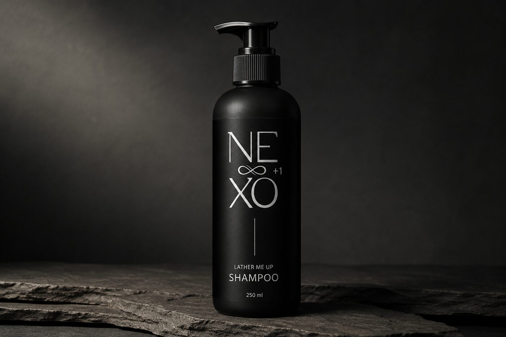
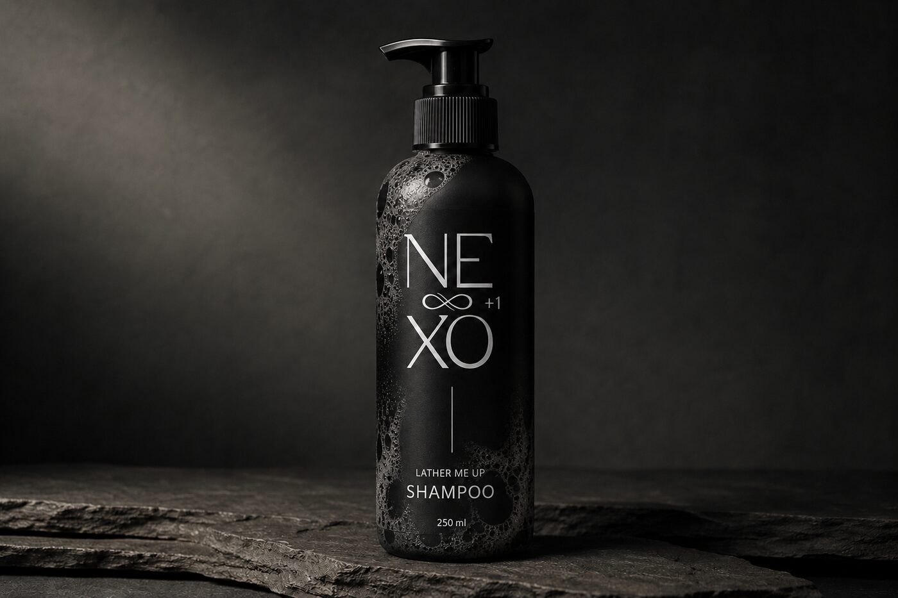

01 / Rengör · Schampo
Lather Me Up
Rengör utan att torka ut.
250 ml
Pris TBD
21 ingredienser ·
Varje en förklarad →
Vad det är
Ett milt och återfuktande schampo som rengör utan att torka ut. Formulan innehåller sheasmör och provitamin B5 som hjälper håret att kännas mjukt, smidigt och glansfullt, samtidigt som hårbotten får en fräsch och behaglig känsla.
Nyckelingredienser
- Shea Butter Derivatives hjälper till att bevara fukt och ger en mjuk känsla
- Panthenol (Provitamin B5) bidrar till en glansfull och välmående look
- Rosmarinolja ger en naturligt frisk och örtig doft
- Mjuka tensider rengör skonsamt och bygger ett lätt, krämigt skum
Så använder du det
Massera försiktigt in i fuktigt hår och hårbotten tills det bildas ett mjukt lödder. Skölj noggrant. Upprepa vid behov.
Följ upp med +2 Mist Me Crazy

Innehåll
Fullständig INCI, varje ingrediens förklarad (21)
- Aqua (Vatten) Bas som löser och transporterar ingredienser.
- Disodium Cocoamphodiacetate Milt rengörande tensid som inte torkar ut hårbotten.
- Shea Butter Glycereth-8 Esters Mjukgör och hjälper till att bevara fukt i hår och hårbotten.
- Cocamidopropyl Betaine Mild tensid som ger ett mjukt och krämigt skum.
- Glycerin Drar till sig och håller kvar fukt i håret.
- Sodium Chloride (Salt) Justerar viskositeten och gör schampot lagom tjockt.
- Rosmarinus Officinalis (Rosmarin) Leaf Oil Ger en frisk örtig doft och en uppfriskande känsla på hårbotten.
- Panthenol (Provitamin B5) Hjälper håret att kännas mjukt, slätt och glansfullt.
- Hydroxypropyl Guar Gör håret mer lättkammat och mjukare.
- Hydroxypropyltrimonium Chloride Minskar statisk elektricitet och friss.
- Sodium Levulinate Naturligt konserveringsmedel som håller produkten fräsch.
- Sodium Glycolate Hjälper till att bevara fukt och balansera pH.
- Caprylyl/Capryl Glucoside Mild rengörande och formula-stabiliserande ingrediens.
- Parfum (Doft) Ger produkten en behaglig arom.
- Sodium Anisate Naturligt konserveringsmedel.
- Acacia Senegal Gum Ger struktur och stabiliserar formulan.
- Xanthan Gum Gör formulan mjuk och krämig.
- Alcohol Hjälper till att lösa och fördela ingredienser.
- Lactic Acid (Mjölksyra) Balanserar pH till hårbottennivå.
- Camphor Ger en svalkande, uppfriskande känsla.
- Beta-Pinenes Naturligt växtextrakt som bidrar till en fräsch doft.
I ritualen
- +1 Rengör
- +2 Vårdar
- +3 Skyddar